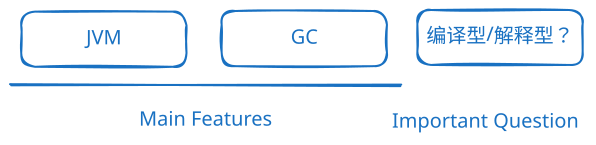
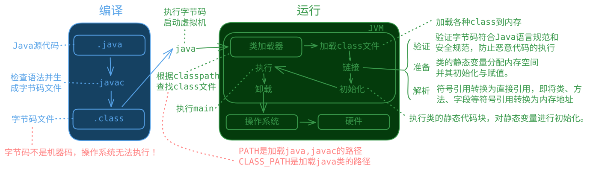

特性
概述

- 面向对象：继承、封装、多态
- 健壮：强类型机制、异常处理
-
垃圾自动收集（Garbage Collection，简称GC）：在传统的编程语言中，需要手动分配和释放内存，容易出现内存泄漏和悬挂指针等问题。GC可以自动分配和释放内存。
- 跨平台：
JVM（class 文件运行在各操作系统的 Java 虚拟机上）
- 解释型语言（class 文件由解释器运行）
🤔 为什么有人说 Java 是“编译与解释并存”的语言？
📖 编译器将源代码编译为字节码（字节码不是二进制，不是机器码），虚拟机解释或 JIT 编译执行生成的机器码
Java执行程序的理论

（重点）Java的加载与执行（
java Hello 的执行过程）：
1. 执行
java Hello后，会启动 JVM
2. JVM 会启动类加载器（classloader）
3. 类加载器加载 Test 类，自动去硬盘上找
Hello.class字节码文件
4. 找到
Hello.class字节码文件之后将其加载到 JVM 当中。
5. JVM 将
Hello.class 字节码解释为机器码。
6. 操作系统执行机器码和底层硬件平台进行交互。